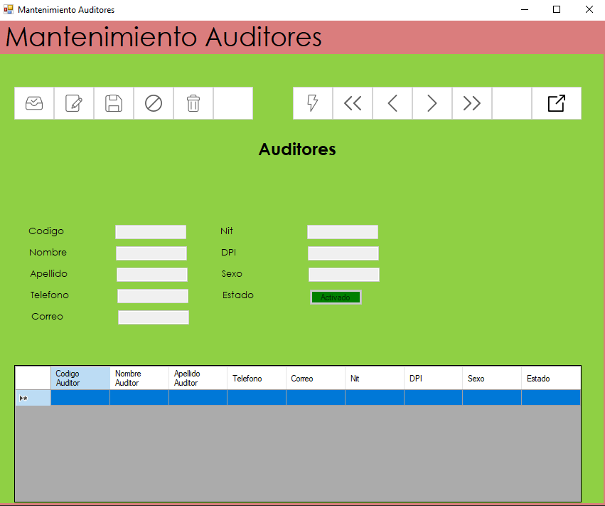

Formulario auditores
En este formulario se podrá realizar los mantenimientos relacionados con los auditores, también se podrá administrar
todos los datos relacionados para la correcta administración y control de los auditores.

Descripción del funcionamiento del mantenimiento de auditores del sistema de auditoria de sistemas.